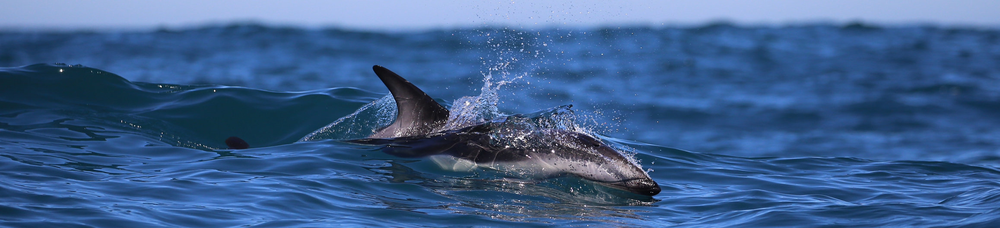

What are you listening for?
The main questions guiding my research interest, and the tools I have found to answer them
I was born and grew up in Porto Alegre-RS, southern Brazil. My academic career was based in the Department of Zoology at the Federal University of Rio Grande do Sul (UFRGS), where I have concluded my bachelor in Biological Sciences studying the taxonomy and systematics of freshwater fishes. During the masters and the PhD – now living at the coast, I have investigated the ontogeny, evolution and functional morphology of the sound generating structures in dolphins. The main idea was to answer how dolphins evolved different head shapes into similar sound production capabilities, and how unique features might reflect the natural history of some particular species.
I have great interest in the classification and evolution of cetacean acoustic behaviors, particularly in toothed whales. This topic is of great relevance for passive acoustic monitoring (from real-time to long-term studies), as well as for the taxonomy and systematics of the group.
I am now enrolled in a post-doc position at the Department of Statistical Sciences, University of Cape Town, to investigate humpback dolphin bioacoustics and population dynamics in collaboration with Sea Search Research and Conservation and The SouSA Consortium.